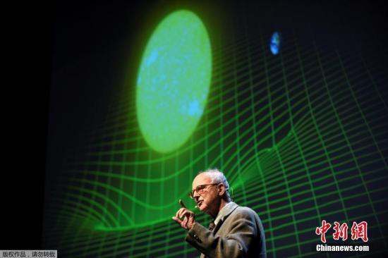

时空弯曲：天体物理学新发现获突破 何为引力波？ 中新网10月4日电 据外媒报道，瑞典皇家科学院将2017年诺贝尔物理学奖授予雷纳-韦斯(Rainer Weiss)，巴里-巴瑞斯(Barry C. Barish)和吉普-索恩(Kip S. Thorne)三位科学家，以表彰他们在引力波研究方面的贡献。为什么一项常人难以理解的天体物理学新发现能够引发如此多的关注？究竟什么是引力波？发现了引力波，又有怎样的科学意义？
引力导致的时空弯曲

瑞典斯德哥尔摩当地时间10月3日，瑞典皇家科学院将2017年诺贝尔物理学奖授予Rainer Weiss，Barry C. Barish和Kip S. Thorne，以表彰他们在引力波研究方面的贡献。
我们无时不刻地感知到重力――也就是引力的存在。而在广义相对论中，引力可以用时空弯曲来解释。假设时空就是一张蹦床：一枚小小的网球放在蹦床上，它只会静静地停在那里；而如果此时在蹦床上坐着一个人，蹦床就会向下凹陷，那枚小网球则会滚向这一凹陷处，而且越是离得近，滚得越是快，网球被这处凹陷"吸引"了。
为何花了一个世纪？
爱因斯坦在1916年发表广义相对论时，就预言了引力波的存在。与声波、光波(电磁波)不同的是，引力波在宇宙中的传播不会受到任何阻挡。
证实引力波为何意义重大？
从科学意义上而言，证实引力波确实存在，将彻底改变物理学对宇宙的认知。科学家将能够由此来研究大爆炸事件的后续影响，还能够更精确地来观察宇宙中遥远的角落。源自大爆炸的引力波，还能帮助科学家更好地理解宇宙的构成。